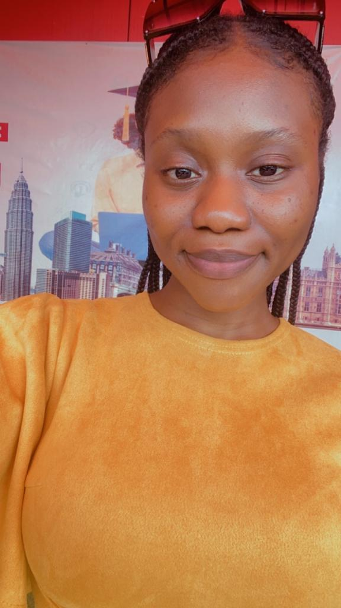

Favour Chikezie

Professional Summary
I am a computer programmer skilled in web development with React.Js. Next.Js,
Tailwind CSS and I am currently taking classes in app development (flutter) and
blockchain development (solidity).
I am also a blockchain data analyst, I have analyzed various data on the
blockchain using Dune analysis and can tell where the next trend or bag is on
any blockchain. In addition, I have succeeded in various trades where the last
trade I made, I moved from 75K to 370K Market Cap on Axiom as a degen trader.
I am not limited to these, I am equally skilled in building telegram bots, I build
telegram bots in seconds which generates revenue for users.
I worked as the frontend web3 developer for two Polkadot hackathons and won
$10,000 each with my team for each hackathon. Despite being the only female
and African on the team, this did not discourage me to give my best for my team
to win.
In addition, I am the founder of LifeFlow who doubles as the product lead and
project manager. Lifeflow is more than just an app, it is Speed. With just a click,
it speedily connects patients with doctors, blood donors with patients, patients
with pharmacists, hospitals with patients, and lots more from anywhere around
the world and at any time. I am equally a KECTIL Regional Cordinator for Nigeria,
and a youth leader who goes to secondary schools, conducts outreaches and
positively impact on youths to acquire skills and have positive moral upbringing.
Education
- Free Code Camp
- App Development
- 2025 - Current
- Cryfrin Blockchain Academy
- Blockchain Development
- 2025 - Current
- The Nirvana Academy
- Web3 as a business, blockchain data analysis, Degen Trading, Telegram bots and web3 development;
- April - June, 2025
- University of Nigeria, Nsukka
- BSc, Pure and Industrial Chemistry
- 2017 – 2022
- Aptech Computer Institute
- Full stack Web development with PHP
- 2022 – 2023
- Skillshare Online Platform
- Swintec Computer Institute
- Basics and Fundamentals in Computer Science
- 2020
Work Experience
Blockchain Data analysis:
- Analysis of PumpSwap over the last 30days
- Actions of Decentralized exchanges (Dexes) on ethereum over the past one year
- 5 most bought token on solana network
- 7 Days transactions metrics on solana network
- 7 Days metrics of transactions that has occurred on optimism network
- Comparison of Dexes on Kaia network
- Where the money is going to on the blockchain
Web3 projects:
- LifeFlow: An app that connects blood donors to patients in real time, using AI
and blockchain technology.
Website: https://lifeflow-landing-page.vercel.app/
- Motoverse:A decentralised car market place:
Website: motoverse.global
- Softlaw: A decentralized platform where users obtain IP addresses and are guarded by lawyers on the platform.
- Zaqua: A decentralized water cleaning application
Web2 Projects:
- RichCe Garde: A green-tea website
- Toy Website: An e-commerce website that sells toys.
- Virtual Science Library
Skills
- Stacks: React.js, HTML5, Tailwind CSS, JavaScript (ES6+), PHP, MySQL
- Web Technologies: RESTful APIs, JSON
- Version Control: Git, GitHub
- Dune Analysis
- Axiom trading
- UI/UX Design
- Responsive Web Design
- Cross-Browser Compatibility
- Agile Development Methodologies
Soft Skills
- Excellent Communication
- Leadership Skills
- Product Lead, LifeFlow
- Project Manager, LifeFlow
- German Language
Leadership
- Corps camp director, over 2000 National Youth Service Corps (NYSC) members Ede, Osun State, Nigeria
- Platoon Leader, over 200 (NYSC) corps members
- Regional Coordinator Nigeria, KECTIL, 2025
- KECTIL Colleague, 2024
- Founder, LifeFlow
- Product Lead, LifeFlow
- Youth Outreach Lead, Gatekeepers
- Publicity and Media Leader, Let’s Reach Out Missions Organization (LRO)
- Speaker, Department of Pure and Industrial Chemistry, University of Nigeria, Nsukka (UNN)
- Study prefect, Federal Government Girls’ College, Owerri, Imo state,Nigeria.
Awards
- Most engaging Regional Cordinator on assignment 1 and 2, KECTIL 2025
- Certificate of Superior Performance, KECTIL 2024
- First position ($100 amazon gift card) award for KECTIL cultural day
presentation
- KECTIL most engaging colleague on Gender Equality, 2024
- KECTIL most engaging assignment on good governance, 2024
- Outstanding corps member, Batch C Stream 1, National Youth Service Corps (NYSC), Ede, Osun state.
- Certificate of completion, ImpactHER & African Union CIEFFA
- Second position, Cowbell Mathematics Competition, Federal Government Girls’ College, Owerri, Imo state, Nigeria.
Languages
English and German
Contact
Hobbies
Favour Copyright 2025